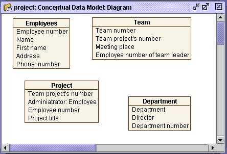

Adding entities and attributes
 Adding entities to the data model
Adding entities to the data model
An entity is a representation of any abstract or concrete object of interest
to the organization and whose characteristics are described by attributes.
When you create an entity, Open ModelSphere automatically assigns the
default name Entity. To avoid confusion as the data model becomes more complex,
it is highly recommended to name entities as early as possible after the creation. To
do so, use the graphic editing function of an entity’s contents.
To create an entity:
- Select the entity creation tool from the creation toolbar and
then click the desired location in the diagram window.
- Double-click the entity’s name, highlight it, change it and press Enter.
- Create and name entities as in the following diagram.

You can create several
entities without having to
click the Entity tool each
time. Simply double-click
the tool to make it a permanent
selection. Once you
have finished, double-click
the pointer tool.
You can change the entity’s name and add information in the entity properties window.
Right-click the entity and choose Properties.

 Adding attributes to the entity
Adding attributes to the entity
An attribute describes an entity’s characteristic.
An attribute typically holds, at most, one value. Every entity must contain at least one
attribute. Open ModelSphere offers a graphic editing function that lets you
add attributes directly in the graphical representation of an entity. When you create an
attribute, Open ModelSphere automatically assigns the default name Attribute.
- Right-click the entity, either in the explorer or diagram window, and choose
Add Attribute from the menu. A second part will be added to the entity.

To add attributes repetitively, highlight the attribute name in the diagram, and press CTRL and ENTER simultaneously.
- Double-click the attribute name, highlight it, change it and press Enter.
- Add other attributes in the same way. Once you are done, the diagram window
should resemble the following:

You can also modify or delete an attribute using ModelSphere’s graphic editing function.
To delete an attribute, right-click it and choose Delete from the pop-up menu. Or,
select the object you want to delete and click the delete tool from the Edit toolbar.